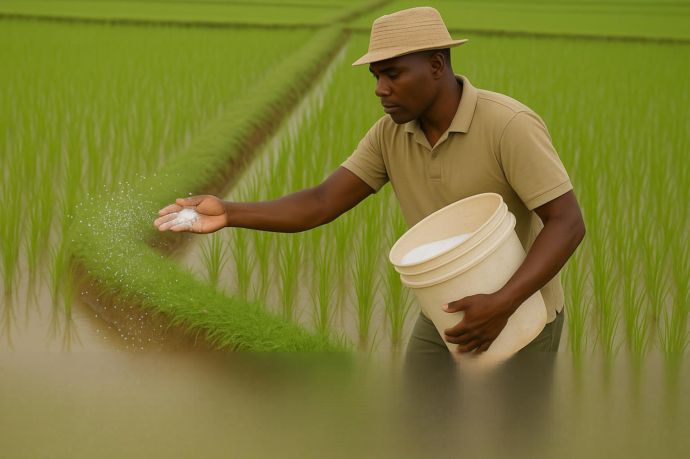
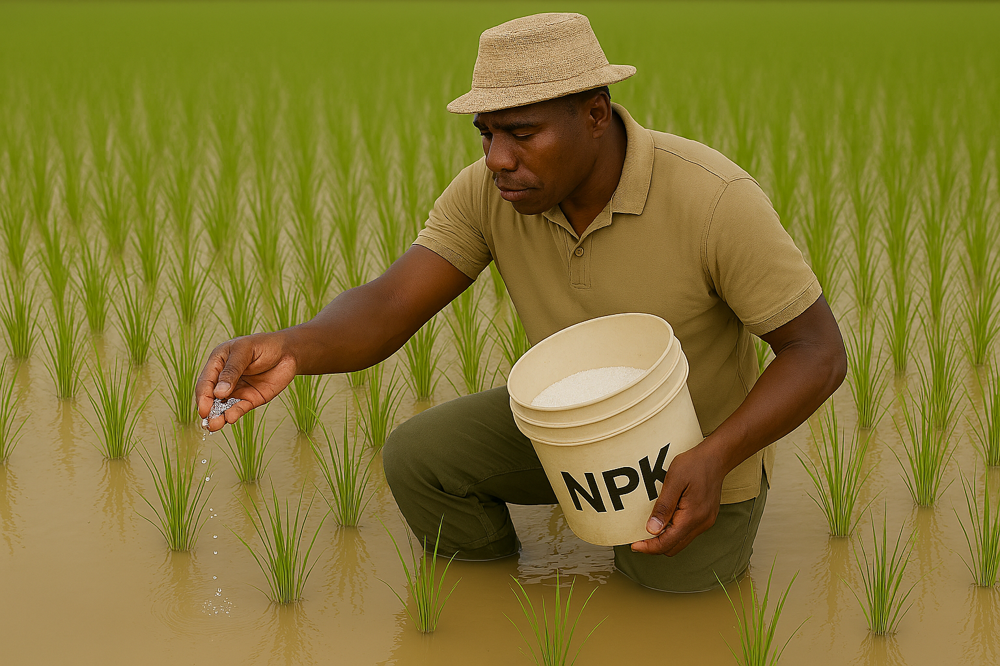

Topdressing
Applying fertilizer to support rice growth
Topdressing adds nutrients during the vegetative stage. The right fertilizer type and rate keeps rice healthy and productive.

Urea
Supplies nitrogen for leaf and tiller growth.
Stage: vegetative development
Rate: 35-50 kg/ha per application

CAN
Provides nitrogen and calcium for stronger plants.
Stage: early tillering
Rate: 40-60 kg/ha

NPK
Supplies balanced nitrogen, phosphorus and potassium.
Stage: panicle initiation
Rate: 50-70 kg/ha
Application methods
How fertilizer is delivered to rice
Topdressing can be applied in different ways depending on available labor, soil condition and plant stage.
Broadcasting
Spreading fertilizer evenly over the whole field for rapid uptake.
Band placement
Placing fertilizer in rows near the plants for efficient nutrient use.
Spot application
Applying fertilizer directly to clumps or patches that need extra nutrition.

Fertilizer application
Watch how fertilizers are applied in the rice field to support strong tillering and yield formation.